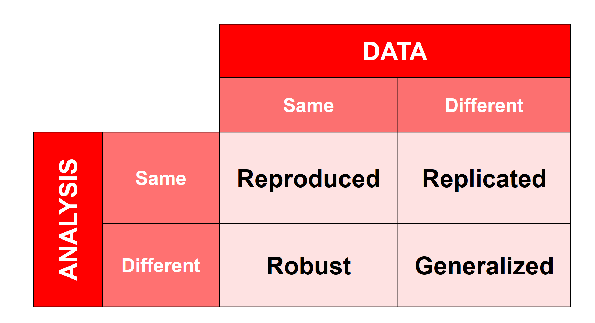
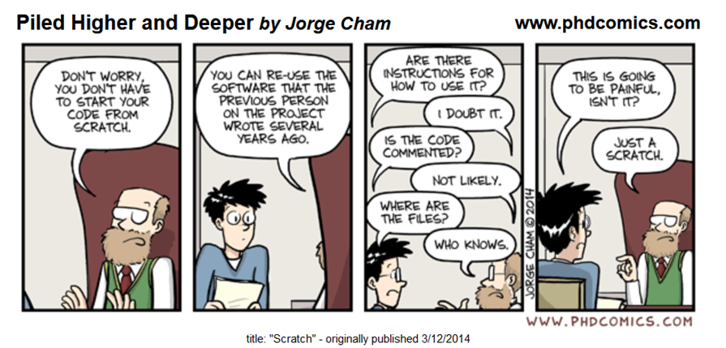
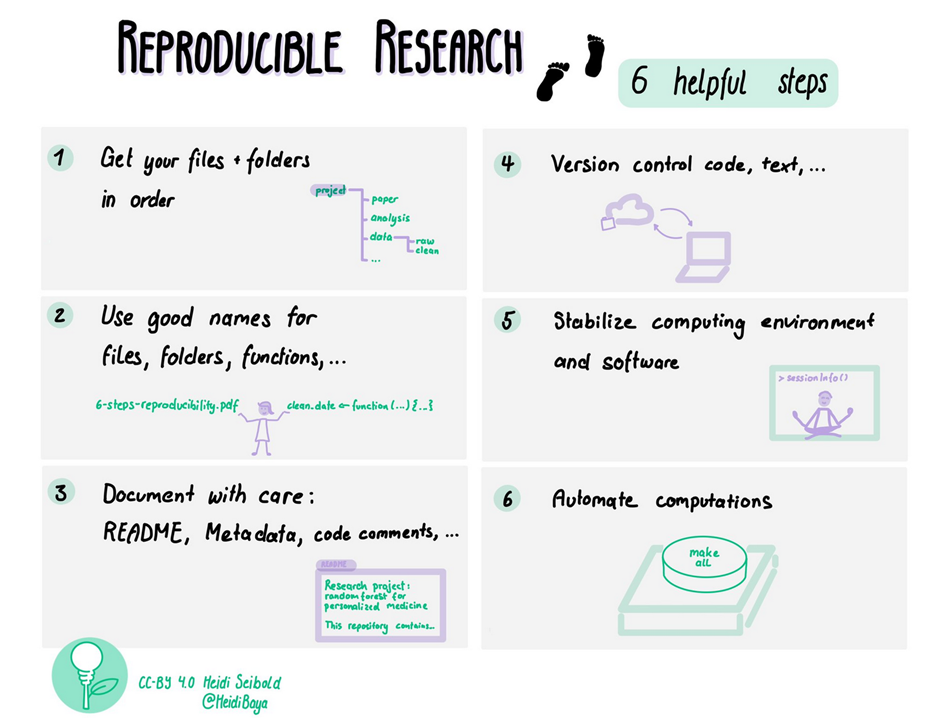

All in One View
Content from Introduction
Last updated on 2026-10-03 | Edit this page
Estimated time: 25 minutes
Overview
Questions
- Why does reproducibility matter for research integrity?
- What does this lesson cover, and who is it for?
Objectives
- Explain why reproducibility matters to research quality and trust
- Describe how this lesson connects to broader open science practices
Who this lesson is for, and what it covers
This lesson is written for library and research-support staff (data services librarians, research computing consultants, and similar roles) who want to help researchers make their work reproducible. No programming background is assumed.
By the end, given a research workflow, you should be able to identify what someone would need to follow or check it, recommend a concrete improvement where that connection has a gap, and explain who could carry out or assess the resulting check - a researcher’s own team, an appropriately skilled librarian, or a partner service, depending on expertise and access. That’s the practical skill this lesson builds toward, one episode at a time - not the same thing as actually completing a check yourself.
Over the next five episodes, you will move from concepts to practice: what reproducibility means and how it differs from replicability (episode 2), when reproducible work can still be checked even if it isn’t fully open, using a recurring case (episode 3), the benefits and challenges researchers face (episode 4), concrete tools mapped onto each stage of a research workflow (episode 5), and where library services fit into supporting all of this (episode 6).
Why does this matter?
Reproducibility is a key part of research integrity - meaning honest, careful, and accountable research practice. When research is reproducible, others can check your work, build on it, and reuse it with confidence.
For example: a researcher who deposits their raw data (their original, unprocessed observations), analysis code (saved instructions a computer runs), and a README (a short file explaining a project’s contents and how to use it) has taken a real step toward making their work reproducible - though depositing those three things doesn’t guarantee it on its own; a missing software version or an unclear step can still stop someone else cold. When a colleague downloads that package, reruns the same script, and gets the same numbers back - without emailing the original researcher to ask what “clean_data_v3_final.csv” actually contains - that successful rerun is what demonstrates the work is reproducible. Depositing the materials makes reproduction possible, if they’re complete enough; someone actually redoing it successfully is what confirms it.
Making research reproducible helps:
- Improve the quality and reliability of results
- Respond to concerns about irreproducible studies in many fields, sometimes referred to as a “reproducibility crisis” (see episode 3 for more on this framing)
- Support broader changes in research, including global efforts to make science more open
- Align with funder, journal, and institutional expectations for transparency and rigor
In short, reproducible research strengthens science, supports collaboration, and helps researchers meet growing expectations for responsible research conduct.
Reproducibility and open science
Reproducibility overlaps with, but is not the same as, open science: the broader movement toward making research outputs such as data, code, methods, and publications openly available, alongside wider goals like broadening who can participate in research and access its results equitably - this lesson focuses on the reproducibility piece, not that whole movement. Open science is one route to reproducibility (it is hard to reproduce a study you cannot access), but the two are not interchangeable. A dataset can be posted publicly with no documentation or version history, which makes it open, but its lack of documentation does not establish that it’s reproducible. A research team can also make their full workflow reproducible for internal use while keeping the data itself restricted for privacy or licensing reasons, which makes it reproducible but not fully open. Episode 3 develops this distinction through examples.
Openness or reproducibility? (~5 min)
A public dataset has no instructions and no documented steps for redoing the analysis. A different research team’s dataset is restricted to approved collaborators only, but comes with a fully documented workflow that an authorized colleague has successfully rerun.
Which of these illustrates openness? Which illustrates reproducibility? Explain your answer in one sentence.
The public dataset illustrates openness - it’s accessible to anyone - but not reproducibility: the package alone doesn’t provide enough information for another analyst to reliably repeat the reported analysis. Public access alone doesn’t establish reproducibility. The restricted dataset illustrates reproducibility - a colleague successfully reran the documented workflow - without being open, since it isn’t publicly accessible. A project can have either property, both, or neither.
(~3 min)
Before we go further: in your own words, why might a funder or journal care whether a study is reproducible?
Possible answers: reproducibility lets funders and journals verify that public or grant money produced results that hold up under scrutiny; it protects institutional and publication reputations against retractions; and it lets other researchers build on the work with confidence instead of re-doing it from scratch.
A process to build toward
The diagram below previews the kind of thinking this lesson develops: starting from a result someone wants to check, through identifying what supports it, to attempting a scoped check and agreeing on a next action. A check doesn’t need everything documented perfectly first - a limited attempt is often how you discover exactly what’s missing, and even a blocked attempt is useful once the specific gap is named. Who attempts the check depends on access and expertise: an authorized researcher, an appropriately skilled librarian, or a partner service. We’ll return to this diagram at the end of the lesson.
flowchart TD
accTitle: Librarian consultation flow
accDescr: From a result or output that needs checking, through identifying its materials, planning and attempting a scoped check, to recording the outcome and agreeing a next action - whether or not the check was blocked by a gap.
A["What result or output needs checking?"]
A --> B["Identify the materials and decisions behind it"]
B --> C["Plan a scoped check: rerun a computation, compare versions, or trace evidence to an interpretation"]
C --> D["Attempt the check with the access and information available"]
D -->|Blocked by a gap| E["Record the specific gap and recommend an improvement, with an owner"]
D -->|Completed| F["Record what it showed - a match, a discrepancy, or a partial result"]
E --> G["Agree the next action"]
F --> GA librarian consultation flow: identify materials, plan a scoped check based on what’s available, attempt it, and record what happened. Full traceability up front isn’t required to attempt a limited check - the attempt itself is often what reveals a gap. A blocked attempt is still productive: it names a specific gap to close, with an owner. A completed check can show a match, a discrepancy, or a partial result, not always success - and either path ends in an agreed next action.
Text equivalent of the diagram above
- Start: what result or output needs checking?
- Identify the materials and decisions that support it.
- Plan a scoped check - for example, rerunning a computation, comparing versions, or tracing evidence back to an interpretation. Full traceability isn’t required before attempting a limited check.
- Attempt the check with the access and information actually available.
- If the attempt is blocked by a gap: record exactly what’s missing and recommend a specific improvement, with an owner. If the attempt is completed: record what it showed - a match, a discrepancy, or a partial result. Completing a check doesn’t automatically mean it succeeded.
- End: agree the next action, based on what’s known so far.
- Reproducibility is central to research integrity and helps others check, build on, and reuse research
- Reproducibility and open science overlap but are not the same thing: openness helps enable reproducibility but does not guarantee it
- This lesson moves from concepts (reproducibility vs. replicability) and openness, to benefits and challenges, to tools, to the library’s role in supporting all of it
Content from Understanding Reproducibility
Last updated on 2026-10-03 | Edit this page
Estimated time: 26 minutes
Overview
Questions
- What do we mean by reproducibility?
- Does reproducibility mean different things in different disciplines?
Objectives
- Explain what research reproducibility is, and distinguish it from replicability and generalization
- Contrast computational reproducibility with transparency of qualitative analysis
This episode asks a single question: how would you know whether a result can be checked, and what counts as evidence that it has been? The next episode applies that question to openness and a running case; here, we build the vocabulary.
Reproducibility: Some Definitions
Reproducibility: Obtaining the same results using the same data and the same analysis steps.
Replicability: Achieving similar results with new data, using the same analysis steps to answer the same question.
Research is reproduced when results are consistent when following the same method and analysis steps with the same input data
Research is replicated when results are consistent across studies that answer the same research question, each of which has obtained its own data
Research results are generalized when results apply in other contexts or populations that differ from the original one

Robust means a finding persists when reasonable, defensible changes are made to the analysis - a different but equally valid statistical test, for example. This matrix is a simplified organizing aid, not an exhaustive definition: generalization in particular is really about how far a finding’s applicability extends, not just about changing both the data and the analysis at once.
Based on: The Turing Way: Overview of reproducibility definitions
Which of these describes a reproduced study? (optional, ~3 min)
- Researchers apply similar methods to the original study in a new study
- Researchers re-analyze data from the original study, using the original analysis steps, and observe the same results
- Researchers reuse data from the original study for a new purpose
Explain your answer in one sentence: what specifically stayed the same?
- Researchers re-analyze data from the original study and observe the same results. What stayed the same: the original data and the original analysis method - only the fact that someone else redid the analysis is new.
Reproducibility: Some Examples
Let us consider an example: a researcher is tossing a coin 100 times to check how often it lands on tails. They register heads or tails after each toss. Heads are registered as 0 and tails as 1. The sample size of this study is N = 100 (since they are tossing the coin 100 times).
Sample size: N = 100
Heads = 0
Tails = 1
Analysis method = Count of tails, divided by total tossesAfter all data is collected, the researcher calculates the proportion of tails: 53 tails out of 100 tosses, or 53%. The researcher makes the complete data table and detailed methods available to the public.
Another researcher downloads the data table and re-runs the exact same calculation in a different software, using the R programming language. They also get 53%. They have reproduced the study - same data, same calculation, same result.
A third researcher reads about the reproduced study and decides to investigate the same question with the same coin. They apply the exact same method: toss the coin 100 more times, register heads as 0 and tails as 1, and calculate the proportion of tails. This time they get 49 tails out of 100, or 49%. This is a replication attempt - new data, same method, same question. Whether 49% “counts” as corroborating the first result is a judgment call, not an automatic yes or no; replication attempts do not always land on an identical number, and that is expected.
Note, however, that in many different disciplines the word “reproduced” could be used in both the second and the third researcher case, that is to mean both reproducing and replicating the study.
Matching calculations demonstrate reproducibility; they do not by themselves establish that the study’s methods or conclusions are sound.
Reproduced, replicated, or generalized? (~5 min)
For each scenario below, decide whether it describes reproducing, replicating, or generalizing a result. For each, name what stayed the same and what changed.
- A team re-runs a colleague’s published analysis script on the exact same dataset and gets the same numbers.
- A team collects new survey data using the same questionnaire and analysis method, and finds a similar pattern of responses.
- A team that found an effect in a lab study finds the same effect holds in a real-world field setting with a different population.
- Reproduced - same data, same method; nothing changed except who ran it.
- Replicated - same method and question, but new data.
- Generalized - the result was shown to extend to a different context/population, using a different setting rather than the original lab conditions.
(optional, ~5 min)
Can you provide additional examples of reproducible studies from various disciplines or research types?
Reproducibility Across Methodologies and Research Disciplines
Quantitative research analyzes numerical measurements; qualitative research analyzes meaning in non-numerical material such as interviews or documents; computational means carried out by a computer.
Quantitative Studies: Computational Reproducibility
It is defined as “obtaining consistent computational results using the same input data, computational steps, methods, code, and conditions of analysis” (https://www.nap.edu/catalog/25303). What it means is basically re-running analyses/code with the same data.
Qualitative Studies: Process Transparency
For this lesson, qualitative transparency means documenting how material was selected, coded, and interpreted so another researcher can trace and critically assess the reasoning - not that they necessarily arrive at the same interpretation (the researcher’s explanation of what the evidence means). Two researchers can trace the same evidence and reasonably interpret it differently; what matters is that the path to the interpretation is visible and can be scrutinized.
(~5 min)
What would you inspect to check a quantitative result, like a survey calculation? What would you inspect to trace a qualitative interpretation, like an analysis of interview transcripts? Discuss in pairs how these two kinds of checking differ.
- Reproducibility usually means obtaining the same results with the same data and the same analysis steps.
- Across different disciplines and methodologies, the understanding of what reproducibility means can be very different.
Content from Making Research Checkable
Last updated on 2026-10-03 | Edit this page
Estimated time: 20 minutes
Overview
Questions
- Is research that is open also reproducible, and is research that is reproducible also open?
- What would you need beyond a project’s named materials - a script, a data file, a source excerpt - to actually check what they claim?
Objectives
- Distinguish reproduction, replication, and openness in a case involving restricted materials, and explain what evidence supports the distinction
- Given a reported result, identify what connects it to the materials and decisions that support it, and name a piece of missing information
The previous episode defined reproducibility. This one applies it to a common point of confusion: whether something being public is the same as it being checkable, and works through a single case to build a habit of asking that question.
Reproducibility and Open Research
Reproducibility is closely associated with transparency.
In order to reproduce others’ studies we need to have access to the methods, data, and analyses that have been conducted. So making data, tools and analyses available is essential for reproducibility.
Reproducible does not (have to) mean fully open.
However, a reproducible project does not have to be fully open. For example, due to privacy or copyright restrictions on methods, data, or analyses, researchers might need to keep parts of the research outputs under controlled access (e.g. available only to other researchers and not publicly available). This should not prevent them, though, from making the project fully reproducible (e.g. internally within their research team).
Open does not mean reproducible.
On the other hand, it is entirely possible to practice open science without following reproducibility principles. Materials, data, tools and code can be made openly available but if they do not have necessary documentation, instruction on how to use them, error checks, proper versioning and organization - they are most probably not usable, and the project might not be reproducible.

A Recurring Example: Cool Access LA
Starting here, this lesson returns a few times to a short fictional composite case, Cool Access LA. It is inspired by real UCLA heat-equity research, including the Heat Lab’s Red Hot LA: Mapping Energy Inequality and a UCLA study on how Los Angeles County residents use cooling centers during extreme heat. Cool Access LA is not a real UCLA project, and nothing below describes any real research team’s actual workflow, tools, or data. It is a teaching composite, built to be realistic without being real.
Cool Access LA: Dr. Maya Torres, an urban studies researcher, is studying whether residents of a Los Angeles neighborhood can reach and use public cooling spaces, including public libraries, during extreme heat. Her team combines city temperature and facility-location data with a short household survey and a handful of resident interviews about barriers to using cooling centers. For this teaching case, the team has permission to share a de-identified survey dataset (identifying details that could reveal who a participant is have been removed) and selected, participant-approved interview excerpts. Full interview recordings remain restricted to protect participants.
Reproduced, replicated, or just open? (~5 min)
- A second analyst reruns Dr. Torres’s original scripts on the same survey data and gets the same results.
- A team in a different city collects its own survey and interview data, using the same questions and the same analysis method, and finds a similar pattern.
- Dr. Torres shares her survey dataset and analysis code, but keeps the interview recordings restricted to protect participants.
Which of these is reproduction? Which is replication? Does restricting the interview recordings stop the project from being reproducible?
- Reproduction - same data, same method.
- Replication using new data. Because the setting also changes (a different city), this can additionally provide evidence about generalizability - one matching result in a new place does not prove the finding holds everywhere, but it is a data point toward that.
- This is not reproduction or replication, it is about openness. The survey analysis can be reproduced if the documented workflow runs successfully for someone else - that is a reproducibility question. Whether the interview recordings are public is a separate, openness question. An authorized reviewer could still trace the interview analysis using Dr. Torres’s coding records and decision notes, even without the recordings becoming public. Restricting some material does not automatically make the rest of the project unreproducible.
The Cool Access LA project packet
The rest of this lesson refers back to a small, fictional packet from Dr. Torres’s project (invented teaching material, not a real dataset):
survey.csv- household survey responses. One codebook entry:q1a = days in the past 7 days when the respondent could not reach a cooling space; allowed values 0-7; 99 = no answeranalysis.R- a script that is said to produce Figure 2: Days without cooling access, by neighborhood in the team’s draft report, usingsurvey.csv-
One interview claim in the draft report: “Several residents described walking to the library specifically to use air conditioning.” One supporting excerpt is on file:
Excerpt
INT-07(approved for release): “It gets so hot in my apartment I can’t stay there in the afternoon, so I walk to the library - it’s air conditioned and it’s close enough to walk.”Analytic note: Coded access barrier (home cooling) - the participant describes home conditions as unlivable and names the library specifically for its air conditioning, not as a general destination.
(This excerpt and note are invented teaching material, not a real interview.)
What connects to what? (~5 min)
Having the file names above is not the same as being able to check what they claim. Answer both:
- What would someone need, beyond what’s listed, to reproduce Figure 2 exactly?
- The report claim says “several residents” walked to the library for air conditioning, but the packet only shows evidence - one excerpt and its analytic note - for a single participant. What’s missing before that plural claim is supported? Name what you’d ask for, and what having it would let someone check.
Do not invent an answer (a specific software version, a specific file version, additional excerpts that aren’t shown) - name what you would ask for instead.
- Which exact version of
survey.csvanalysis.Rwas run against (the file may have been edited since the figure was made), and what software/package versionsanalysis.Rneeds to run. Having the script and the data file named isn’t sufficient by itself - the connection between “this script, run on this version of this file, with this software” is what actually has to be documented before someone can reproduce the figure. - At minimum, excerpts and analytic notes for the other residents the claim describes - one coded excerpt supports a claim about one participant, not “several.” Two acceptable directions: ask for more excerpts showing the same pattern (to check whether “several” holds up), or ask that the claim be narrowed to match the one piece of evidence shown (“one resident described…”). A coding scheme - the rules for what counts as an “access barrier” - is necessary but not sufficient here: it tells you the criteria, but checking whether a plural claim holds also requires seeing the individual excerpts and applied codes across enough of the interviews, not just confirming the scheme itself is well-defined. (Whether multiple examples are required at all depends on the qualitative approach in use - some traditions treat one richly-analyzed case as sufficient evidence for a claim about that case, without claiming it generalizes. The gap here is specifically that the evidence shown doesn’t match the claim’s plural scope, not a universal rule that every qualitative claim needs several examples.)
Both answers point at the same kind of gap: a named artifact (a script, an excerpt) is not yet a documented connection between that artifact and the claim it supports. That gap - not the artifact’s mere existence - is usually what a librarian can help close.
Looking ahead
Before judging whether a result can be checked, you first need to know what would count as evidence. Carry this question into the next episode: what would you ask a researcher for, before you could judge whether their work can be checked? The Benefits and Challenges episode picks up exactly that question, from the researcher’s side of the conversation.
Optional: the “reproducibility crisis” debate (~10 min if discussed)
The rest of this episode is background context, not required for the lesson’s practical outcomes above. Use it if you have time and the group is interested; skip it otherwise.
Problems with reproducibility of research have been noticed by many researchers, advisors and policy makers in the past several years and led to some even claim that there is a “Reproducibility crisis”. However, not everyone agrees the “crisis” framing is the right one. Two examples that push back on it, from different angles:
- Is science really facing a reproducibility crisis, and do we need it to? (Fanelli, 2018) - questions whether the evidence supports “crisis” as an accurate description of the problem
- The reproducibility debate is an opportunity, not a crisis (Munafò et al., 2022) - argues the current attention on reproducibility is better framed as a chance to improve research practice than as a crisis to be alarmed about
Reasons for Irreproducibility
- Unavailability of materials, data and/or analyses
- Poor data management
- Unclear analysis specification
- Lack of documentation
- Errors in reporting numbers
- Lack of quality checking procedures
- Insufficient peer review
(optional, ~10 min)
Do you agree that “crisis” is the right framing, based on the two perspectives above? What evidence would help you judge how big the problem actually is? Looking at the list of reasons for irreproducibility above, which one do you think a library service is best positioned to address?
- Reproducible research is not the same as open research - it is important to share research outputs to be able to reproduce others’ studies, but research can be made fully reproducible even if it cannot be made fully open.
- Naming a project’s materials (a script, a data file, a source excerpt) is not the same as documenting the connection between them and a specific claim - that connection is what makes a result checkable.
- Recent studies point to many issues with reproducibility across different disciplines, something that has been termed “reproducibility crisis” (optional background, not required for this lesson’s practical outcomes)
Content from Benefits and Challenges of Reproducibility
Last updated on 2026-10-03 | Edit this page
Estimated time: 20 minutes
Overview
Questions
- How can science benefit from reproducible research?
- How can researchers benefit personally from reproducibility?
- What are the main challenges in making research reproducible?
Objectives
- Identify at least four benefits of reproducible research
- Explain how reproducibility supports research integrity
- List at least four challenges researchers face
- Give one example of how support services can address a challenge
The previous episode ended with a question: what would you ask a researcher for, before you could judge whether their work can be checked? Often, the honest answer is that the researcher hasn’t been able to provide it yet - not from unwillingness, but because reproducibility takes real time, skill, and sometimes runs into legal or ethical limits. This episode looks at why, and what a librarian can realistically do about it.
Benefits for Science
Reproducibility strengthens research by making it:
- Easier to verify, helping others detect errors
- More likely to be accurate, since processes are transparent
- Easier to understand and reuse, through documentation
- Simpler to share, when licensing or privacy allow
Benefits for Researchers
Reproducibility also helps individual researchers:
- Become more efficient: while setup takes time, it saves time later
- Feel more confident, knowing their work can be checked and reused
- Gain recognition: reproducible outputs are valued in grant reviews and assessments
(~5 min)
As a group, name four benefits of reproducibility total - at least one for science and one for individual researchers. Then pick one and explain specifically how it helps someone detect an error or scrutinize a claim (that’s the research-integrity connection, not just convenience).
Common Challenges
Despite the benefits, reproducibility can be hard to achieve. Some common obstacles:
- It takes time to adopt new workflows or improve documentation
- It requires skills in tools, formats, and platforms
- Legal or ethical restrictions may limit what can be shared
- Technical barriers can arise from software changes or compatibility issues
How to Support Reproducibility
These challenges can be addressed with the right support:
- Time: Institutions and funders can recognize reproducible outputs and allow time for preparation
- Skills: Training and support staff can help researchers learn best practices
- Restrictions: Secure platforms and internal review can enable controlled sharing
- Technical issues: Guidance on software documentation and environment capture (recording the software and versions needed to rerun an analysis) can help others reproduce results
Back to Cool Access LA (introduced in the previous episode): a new research assistant is joining Dr. Torres’s team and needs to pick up the project from the documentation alone - the README, codebook, and analysis scripts have to carry knowledge that would otherwise live only in Dr. Torres’s head, and that takes time and skill to write well. Separately, the team’s interview recordings stay in a secure system under the study’s Institutional Review Board (IRB) protocol - a legal/ethical restriction, not a technical one, and one factor among several rather than the project’s only obstacle.
(~5 min)
First, as a group, list four challenges researchers face in making work reproducible (use the list above or your own experience). Then pick one - the documentation handoff to a new team member, Dr. Torres’s interview-recording restriction, or one of your own - and with a partner, name one feasible next action that addresses it and who would take it.
- Reproducibility improves research quality and benefits both science and individual researchers
- It can be difficult due to time, skills, legal, and technical challenges
- Support services like training, infrastructure, and guidance are key to helping researchers succeed
Content from Tools for Reproducible Research Workflows
Last updated on 2026-10-03 | Edit this page
Estimated time: 53 minutes
Overview
Questions
- What are reproducible research workflows?
- Which stages of the research process can be made more reproducible?
- What tools can help improve reproducibility?
Objectives
- Identify key stages in a research workflow
- Given a workflow gap, identify a practice or artifact that would address it, and describe what a check based on it would show - or would still leave open
- Describe, for a documentation tool and a version-control tool, one specific task it would be used for in a research project
What is a Reproducible Research Workflow?
A research workflow is the sequence of steps a researcher takes to produce outputs like a dataset, an analysis, or a publication.
Reproducibility can be improved in three key areas:
- Data collection and processing
- Data analysis
- Writing and reporting results
The illustration below lists six concrete practices that cut across those three stages, from organizing files at the start of a project through automating the final computations:

Using the right tools helps researchers automate tasks, track changes, and make their work easier to reproduce and reuse. Tools alone will not fix an undocumented, disorganized project, but without them, even well-intentioned practices are hard to sustain over the life of a project.
Sort the stages (~3 min)
Before reading further, try sorting these tasks into the three workflow stages above (data collection and processing / data analysis / writing and reporting): describing what each survey column means, calculating a result from the data, writing up the findings, and keeping a record of changes to a script.
- Data collection and processing: describing what each survey column means (this is what a codebook does)
- Data analysis: calculating a result, keeping a record of changes to a script (version control is most often introduced once code exists to track, so it spans analysis and reporting)
- Writing and reporting results: writing up the findings
The tools below are grouped by three questions you’ll ask in almost every consultation, rather than by workflow stage alone: can someone understand the materials, can someone repeat the analysis steps, and can someone trace the reported findings? These roughly track data collection, analysis, and reporting, but the questions matter more than the labels - they’re what you’re actually checking for, in any order the conversation happens to go.
Can Someone Understand the Materials?
Good documentation makes data collection methods clear and reusable, so someone else can navigate a project without asking you.
- README files – A plain-text file stored alongside a dataset or project that describes its contents, structure, provenance, and terms of use: Cornell template
- Codebooks – A document that records, for each variable in a dataset, its name, meaning, permitted values, units, and how missing data is coded
- Electronic Lab Notebooks (ELNs) – A digital replacement for a paper lab notebook, used to record experimental procedures, observations, and results in a searchable, shareable form (e.g. Jupyter as a notebook interface, or a dedicated ELN platform like LabArchives)
Cool Access LA: recall the project packet from Making Research Checkable. A
README and codebook explain what each survey column
means and note which files (the interview recordings) are restricted and
why. The codebook entry from that packet:
q1a = days in the past 7 days when the respondent could not reach a cooling space; allowed values 0-7; 99 = no answer.
(This is invented teaching data, not a real survey.)
What would go wrong here? (~2 min)
Looking at the codebook entry above (99 = no answer),
what would happen if someone analyzing this data treated 99
as if it were a real count of days, rather than a missing-data code?
It would badly distort any calculation involving that column - averages, totals, or comparisons would be skewed upward by treating “no answer” as “99 days,” which isn’t a real possible value (there are only 7 days in a week). This is exactly the kind of error a codebook prevents: without it, a second analyst has no way to know 99 is a special code rather than real data.
What would you ask for - and what would you do next? (~6 min)
Dr. Torres’s research assistant hands off this note along with the project folder (this is invented teaching material, not a real project):
Cool Access LA survey analysis. Use
survey.csvandanalysis.Rto make the chart in the report. Run it in R. Interview recordings are restricted; approved excerpts are included separately.
With a partner:
- Identify one missing connection between this note and the packet from Making Research Checkable - the same kind of gap the “What connects to what?” question there asked about.
- Propose one specific improvement that would close it. If you don’t know a fact (like an exact software version), write an explicit placeholder for it (“record the R and package versions used here”) rather than inventing one.
- Explain what check that improvement would then make possible.
- Missing connection: the note doesn’t say which version of
survey.csvproduced the chart, or what software/package versionsanalysis.Rneeds. (No codebook is mentioned either, but that’s covered separately above.) - Improvement: add a line to the project’s README naming the exact
survey.csvversion used (e.g. a dated filename or a Git commit reference) and the R and package versionsanalysis.Rrequires. - What it enables: with that recorded, a second analyst could rerun
analysis.Ragainst the named data version, in a matching environment, and compare the result to the report’s figure - a reproducibility check that the hand-off note alone doesn’t currently support. If the interview excerpts matter to the request, the documented access route is the thing to ask for, not the restricted recordings themselves.
Anticipated misconception (not yet observed in teaching): learners may suggest asking for the restricted interview recordings directly. Redirect to the documented access route - the reproducibility question here is about the survey analysis; the interview restriction is a separate openness boundary to recognize, not work around.
The README template above is a useful reference for what a complete version of this README would look like once written down.
Can Someone Repeat the Analysis Steps?
Tools vary based on the type of research (quantitative vs qualitative). This section covers the quantitative tools; the next covers qualitative coding and annotation, plus the reporting tools both kinds of work eventually pass through.
- R, Python – Programming languages commonly used for data analysis; both let you save your analysis as a script (saved computer instructions that can be re-run to repeat a task), so the steps are transparent and repeatable
- SPSS Syntax – A saved set of commands that repeats an analysis in the SPSS statistical software package, playing the same transparency role as an R or Python script
- Git – A version control system that records successive changes to code, text, or data files over time, so any earlier state can be recovered and the history of who changed what is preserved
- Code quality tools – Tools and practices for checking that a calculation behaves as expected, e.g. through automated tests: The Turing Way: Code Quality
- Environment management – Tools that record the exact software versions and dependencies (additional software a project’s code needs to run) a project used, so it can be re-run the same way later or on another machine. This is often done with lightweight, language-specific tools such as renv for R, which records and helps restore the exact versions of R packages (reusable, shareable bundles of software code) a project used - or with full containers (e.g. Docker) that package the entire operating environment. renv is not itself a container; it produces something closer to a lockfile (a record of the exact dependency versions needed to recreate an environment later).
- Code Ocean – Share “code capsules” (a code capsule bundles your code, data, and computing environment together so someone else can run it without recreating your setup): https://codeocean.com
Cool Access LA: Git tracks changes to the analysis scripts as the team revises them, so an earlier version can always be recovered. Environment management (renv) records the exact R package versions used, helping the team recreate the same computing environment for a later rerun.
A version-control scenario (~4 min)
The team already uses Git and committed yesterday’s working script. Today, Dr. Torres’s research assistant edited the analysis script and the resulting figure changed; the input data and software environment are unchanged. A collaborator asks what changed and whether yesterday’s figure can be recovered. Which tool from this episode would you reach for, and what would you do with it?
Git. You would compare the current version of the script against yesterday’s version to see exactly what changed, and you could recover the earlier version of the script (and re-generate the earlier figure) if needed. This doesn’t tell you which figure is scientifically correct - only documentation and re-analysis can establish that - but it does let you inspect and recover the change itself.
Can Someone Trace the Reported Findings?
Whatever the method, tracing a finding means seeing how it connects to its evidence. For a computational result, that check often means rerunning a calculation. For a qualitative interpretation, it usually means tracing evidence and reasoning back to source material. Many projects need both at once - Cool Access LA’s report has a quantitative figure and a qualitative claim side by side, each needing its own kind of check, and a project with computational steps in its qualitative workflow (like the coding software below) can need a rerun-style check there too.
- Coding and annotation – Free, open-source qualitative analysis software such as QualCoder or Taguette, used for coding qualitative source material: attaching descriptive labels (a coding scheme) to passages of text to organize and interpret them - distinct from writing program code. The software itself doesn’t make an analysis auditable; what does is keeping the coded excerpts, the applied labels, and the analytic notes explaining each decision together and reviewable - the tool just makes that easier to do consistently than a scattered set of documents would. Both tools have their own dedicated Library Carpentry lessons if you want to go deeper: Open Qualitative Research with QualCoder and Open Qualitative Research with Taguette
- Active Citation – a practice for qualitative research where claims in a paper link directly to the specific passage of source material that supports them, along with a brief explanation of why that passage supports the claim - not just a hyperlink - so a reader can check the evidence without re-doing the whole analysis. For example: linking a claim about a resident’s stated barrier directly to the relevant, de-identified excerpt of their interview transcript, with a sentence on why that excerpt supports the claim, rather than just a generic citation to “interview #14.” Active Citation example. A more tooled-up descendant of this idea, ATI (Annotation for Transparent Inquiry), comes from the Qualitative Data Repository (QDR) at Syracuse - whose director, Sebastian Karcher, co-taught the pilot workshop for this lesson series’ own Taguette lesson above
Once a finding - quantitative or qualitative - is ready to report, the writing tool matters less than what it preserves the connection to:
- R Markdown – Combines R code with text, both built on Markdown, a lightweight plain-text formatting syntax that converts to HTML, PDF, and other formats
- Quarto – Supports multiple languages; also markdown-based
- Jupyter Notebooks – The same Jupyter environment listed as an ELN above, used here for its other common purpose: combining live Python code with results and narrative for a written report
- HackMD – Collaborative markdown editor for co-writing
- Overleaf – An online editor for LaTeX (a document-preparation system commonly used for polished, technical documents)
Cool Access LA: the team codes interview transcripts in QualCoder or Taguette, then uses Active Citation-style annotation - each excerpt paired with a sentence on why it supports the claim - to link specific claims in the final report back to de-identified excerpts, without exposing the full restricted recordings. Quarto combines the quantitative survey results and the qualitative interview findings into one report - though assembling the writeup this way doesn’t by itself reproduce the reasoning behind the qualitative findings; that traceability comes from the coding scheme and annotations above, not from the writing tool.
Making qualitative analysis auditable (~5 min)
Dr. Torres’s team wants to make their interview analysis auditable without exposing the restricted recordings. What tools or practices from this episode could help? If these tools are not available, what alternatives might work using familiar tools?
QualCoder or Taguette for coding (both free and open source, and both covered in their own Library Carpentry lessons linked above), or Active Citation practices to link report claims to de-identified excerpts. Without access to specialized software, a documented coding scheme in a shared spreadsheet, plus a written record of the analytic decisions made (why a passage was coded a certain way), can substitute for at least part of what dedicated qualitative tools provide.
Before You Go
Before you go (~3 min)
Pick one workflow gap - your own example, or one from Cool Access LA - and answer in a few sentences:
- What’s the gap?
- Which practice or artifact from this episode would close it?
- What would that let someone check - and what would still be a limitation even after the gap is closed?
Example: Gap - a script produces a figure but nothing records which version of the input data it ran against. Practice - version control on the script plus a named or dated data-file version (or a brief data-version note if full version control isn’t set up). What it enables - a second analyst can confirm they’re rerunning against matching inputs and compare results. Limitation - matching inputs and getting the same output confirms the analysis is reproducible; it doesn’t by itself confirm the analysis method was the right one to answer the research question.
Any workflow gap, connected to a specific practice and a specific check plus its limitation, is a good answer. Naming a tool is useful shorthand for the practice, not the point of the exercise.
- Research workflows include data collection, analysis, and reporting; each stage offers opportunities to improve reproducibility
- Match a tool to what you’re actually checking: can someone understand the materials, repeat the analysis steps, or trace the reported findings
- Use documentation (README, codebook) to explain what your data and steps mean, and version control (Git) to inspect and recover changes to your code over time
- A named artifact (a script, a data file) only closes a gap once it’s specifically connected to the claim it’s meant to support - identifying that missing connection is as important as knowing the tool that could fix it
Content from The Role of Libraries in Supporting Reproducibility
Last updated on 2026-10-03 | Edit this page
Estimated time: 23 minutes
Overview
Questions
- What is the role of libraries in supporting reproducible research?
- How can library staff support researchers in improving reproducibility?
Objectives
- Describe how libraries support reproducible research
- Given a description of a researcher’s request, recommend a specific check with its limit, and identify who is positioned to carry it out
Why Libraries?
Libraries are well positioned to support reproducible research: many library services that already exist (open access support, research data management, documentation guidance) map directly onto what reproducibility requires. For example, a funder now requiring a data management plan (a document describing how a project’s data will be organized, stored, and shared) with a documented, shareable dataset is asking for exactly the kind of support research data services already provide for other reasons.
As funders and journals begin to expect not only open but also reproducible research, libraries can expand their support. Librarians work across disciplines and with researchers at all career stages. This makes them key partners in promoting transparency and improving research workflows.
How Libraries Support Reproducibility
No single librarian is expected to do all of the following, and none of it is off-limits to a librarian who has the skills, authorized access, and service mandate for it. Depending on expertise, access, and capacity, library staff can teach a practice, implement it directly, collaborate with the research team, or bring in a specialist to assess it. Library staff can help by:
- Raising awareness and offering training on reproducible research (a familiar entry point for many libraries, though designing good training is itself a real skill, not a trivial add-on)
- Supporting transparent research practices, including documenting methods, sharing data, and explaining analysis steps
- Helping researchers create clear, consistent documentation for all stages of a project
- Reviewing a project’s documentation and workflow for clarity and completeness, so someone - the researcher’s own team, or an appropriately skilled and authorized librarian - can rerun it later
- Advising on version control tools to track changes in code, data, or manuscripts, at whatever depth local skills support: pointing to a resource, troubleshooting hands-on, or referring to a research computing partner
- Directly comparing versions of a committed script to identify exactly what changed, or helping restore a documented computing environment from a recorded lockfile - concrete technical tasks some libraries take on themselves, where staff have the tools and training for it
Which service applies? (~4 min)
Dr. Torres, from Cool Access LA in the previous two episodes, emails you: “My interview recordings have to stay in a secure, IRB-approved system for privacy reasons, but my funder is now asking for a reproducibility statement (a description of what someone would need in order to check or rerun the work, including any access limits). I have my analysis scripts and some scattered notes, but nothing written up in a way someone else could follow, and I don’t know where to start. What would you help me document first, and who would handle any decisions about access?”
Which of the services listed above would you reach for first? Write your answer as a short three-line note: what you know, what’s missing, and the next action - including a specific check that would show whether the improvement helped, who would perform it, and what it would and wouldn’t tell you.
What we know: the interview recordings must stay in the secure, IRB-approved system; the funder wants a reproducibility statement; Dr. Torres already has scripts and notes, but says herself that nothing is written up yet.
What’s missing: not the underlying materials - she has those - but a documented account of the data processing and analysis steps, organized clearly enough for another approved team member to follow. Start by looking at what her scripts and notes already cover before assuming a gap; the missing piece may be organization and explanation, not content from scratch. “Reproducible” does not require the recordings to leave the secure system or become public - that’s an openness question, not a reproducibility one.
Next action: start a documentation and workflow review with Dr. Torres - reading through what she has, then helping her fill in and organize the rest. Once a first version exists, the concrete check is: an authorized member of Dr. Torres’s own team retraces one specific claim in the draft report - for example, the interview claim about walking to the library for air conditioning - through its approved excerpt and analytic note, recording where the explanation holds up and where it’s still thin. That check shows whether the documentation is followable for that claim; it doesn’t confirm the survey analysis is reproducible, which would need a separate rerun. Decisions about access to the restricted recordings stay with Dr. Torres’s team and their IRB protocol.
Which service applies? (~4 min) (continued)
Alternative scenario, same case (use instead of the one above, not in addition - both fit the same four minutes): Dr. Torres’s collaborator can’t recreate the software setup needed to rerun the analysis on a new machine. What service or partner would you point them to, and what specific check would confirm whether it’s fixed?
Start by checking the setup instructions and recorded software versions - a missing dependency or an unrecorded version is often the actual cause, and that’s a documentation gap you can help close. Where a librarian has the skills, the concrete check is comparing the recorded package versions (e.g. in a lockfile) against what’s actually installed on the collaborator’s machine, noting exactly which versions differ. That comparison shows whether the environment now matches what’s recorded - it does not by itself confirm the analysis reproduces; that still needs an actual rerun once the environment is fixed. If rebuilding the environment itself needs expertise beyond what’s locally available, refer the researcher to research computing or an appropriate IT partner.
Reflection (~4 min)
What is one area where you think libraries can make the biggest difference in supporting reproducible research? Given your own library’s staffing and expertise, which of the areas above feel realistic to take on, and which would need new skills or partners?
Possible answers: awareness-raising and documentation support are realistic starting points for most libraries since they build on existing reference and instruction skills. How far a library can go with version-control or environment-management tasks varies a lot by staffing - some libraries have people who do this hands-on, others rely on training up existing staff or partnering with a research computing group. Neither is the “correct” level; the point is knowing which one describes your library.
Back to the process from the Introduction
Recall the consultation flow from the Introduction: identify what needs checking, find the materials and decisions behind it, plan and attempt a scoped check, and agree a next action - whether the attempt was blocked by a gap or completed. Every exercise in this lesson - the packet-connection and README questions, the Git scenario, the qualitative-auditability question, and the two scenarios above - has been one pass through that same flow.
flowchart TD
accTitle: Librarian consultation flow
accDescr: From a result or output that needs checking, through identifying its materials, planning and attempting a scoped check, to recording the outcome and agreeing a next action - whether or not the check was blocked by a gap.
A["What result or output needs checking?"]
A --> B["Identify the materials and decisions behind it"]
B --> C["Plan a scoped check: rerun a computation, compare versions, or trace evidence to an interpretation"]
C --> D["Attempt the check with the access and information available"]
D -->|Blocked by a gap| E["Record the specific gap and recommend an improvement, with an owner"]
D -->|Completed| F["Record what it showed - a match, a discrepancy, or a partial result"]
E --> G["Agree the next action"]
F --> GThe same librarian consultation flow from the Introduction. Which parts a library takes on varies by staffing and expertise, not a fixed division of labor: some libraries mainly help identify materials and plan a check; others, with the right skills and access, also attempt the check itself. What matters is agreeing who does what for a given request - the same judgment call this episode’s exercises asked you to make.
Text equivalent of the diagram above
- Start: what result or output needs checking?
- Identify the materials and decisions that support it.
- Plan a scoped check - for example, rerunning a computation, comparing versions, or tracing evidence back to an interpretation. Full traceability isn’t required before attempting a limited check.
- Attempt the check with the access and information actually available.
- If the attempt is blocked by a gap: record exactly what’s missing and recommend a specific improvement, with an owner. If the attempt is completed: record what it showed - a match, a discrepancy, or a partial result. Completing a check doesn’t automatically mean it succeeded.
- End: agree the next action, based on what’s known so far.
- Libraries are natural partners in supporting open and reproducible research, because much of the required support already exists as library services under other names
- Library support for reproducibility ranges from familiar entry points (awareness, documentation) to more specialized, technical services (version control, environment comparisons) - which level a given library offers depends on staffing and expertise, not a fixed rule about what librarians do or don’t do
- Reproducibility support builds on existing library expertise in research data and scholarly communication